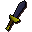
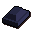

Mithril dagger

| Config name | mithril_dagger |
| Item id | 1209 |
| Value | 325 gp |
| Weight | 14oz |
| Members | No |
| Tradeable | Yes |
| Stackable | No |
| Equip slot | righthand |
| Options | Wield |
| Category | weapon_stab |
| Defined in | scripts/skill_combat/configs/melee/daggers.obj |
| Equipment stats | Stab att 11, Slash att 5, Crush att -4, Magic att 1, Magic def 1, Strength 10 |
Mithril dagger
A dangerous dagger.
How to make
| Skill | Level | XP | Ingredients | Tool | How | Where | Makes |
|---|---|---|---|---|---|---|---|
| Smithing | 50 | 50.0 |  Mithril bar | interface | anvil | 1 |
Sold at
| Shop | Shopkeeper | Stock |
|---|---|---|
| Varrock Swordshop. | 3 |
Referenced in scripts
scripts/_test/scripts/cheats/cheat_bank.rs2scripts/areas/area_wilderness/scripts/lava_maze.rs2scripts/levelrequire/scripts/tier20.rs2scripts/levelup/scripts/levelup_unlocks_smithing.rs2